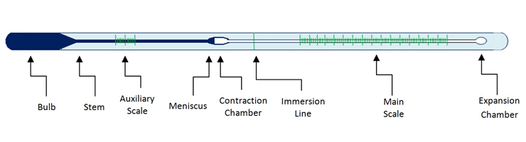

A liquid-in-glass thermometer commonly in use is mercury or coloured alcohol as the thermometric substance.
The volume of the liquid changes uniformly with the change in temperature.
The liquid in the bulb must; (characteristics)
- Be easily seen (visible).
- Expand or contract uniformly and by a large amount over a small range of temperature.
- Not stick to the inside of the tube. (Should not wet the inside of the tube.
- Have a wide range of temperature.
THERMOMETRIC LIQUIDS
-the most common in use is mercury and alcohol.
Mercury freezes at -39oC and boils at 357oC while alcohol freezes at -115oC and boils at 78oC. Alcohol is therefore suitable for measuring temperatures below - 39oC.
PROPERTIES OF THE TWO THERMOMETRIC LIQUIDS
| Alcohol | Mercury |
| Low boiling point, 78oC | High boiling point, 357oC |
| Low melting point, -115oC | Relatively higher melting point, -39oC |
| Poor thermal conductor | Good thermal conductor |
| Expansion slightly irregular | Expands regularly |
| Wets glass | Does not wet glass |
| Coloured to make it visible | Opaque and silvery |
QUESTION
Explain why water is not used as a thermometric liquid?
TEMPERATURE SCALE
A scale of temperature is obtained by selecting two temperatures known as fixed points
The range between this two fixed points is divided into a number of equal divisions.
On the celcious scale, the lower fixed point is the temperature of pure melting ice and is taken as 0oC. The impurities in the ice would lower its melting point.
The upper fixed point is the temperature of steam above water boiling at normal atmospheric pressure of 760mmHg and is taken as 100oC.
The temperature of boiling water itself is not used because any impurities in water would raise its boiling point. The temperature of steam is not affected by impurities in water.
When these points have been marked, the range between them is divided into 100 equal divisions. Each division is called degree.
FEATURES OF A COMMON THERMOMETER
The basic features of a common laboratory are as shown below.

Bulb- Carries the liquid in the thermometer. It has a thin glass wall for effective heat transmission between the liquid and body whose temperature is taken.
Capillary bore – Liquid expands and contracts along the capillary tube. It is narrow for high degree of accuracy.
Glass stem – Is a thick wall surrounding the capillary bore. It also serves as a magnifying glass for easy reading of scale.
CELCIUS AND KELVIN SCALE
They are the commonly used temperature scale.
The celcius scale has the fixed points at 0oC and 100oC.
In Kelvin scale, the temperature of pure melting ice is 273K while that of pure boiling water at normal atmospheric pressure is 373K.
The lowest temperature in the Kelvin scale (0K) is referred as absolute zero.
This is the temperature at which the energy of the particles in material is zero.
To change oC to Kelvin
T = (ѳ + 273) K where ѳ is the temperature in oC
Example
Convert 25oC in Kelvin
T = (25 + 273)
= 298 K
To change Kelvin to oC
Ѳ = (T- 273) 0C where T is the temperature in Kelvin
Example
Convert 1 K
Ѳ = 1-273
=-272oC
NOTE: Temperature in Kelvin scale cannot have a negative value because the absolute zero, (0 K), is the lowest temperature attainable.